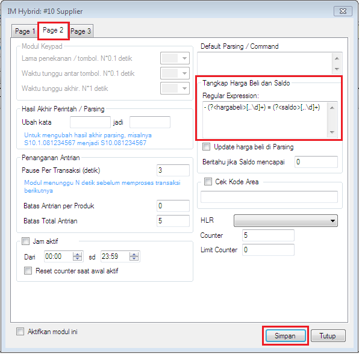

Saldo Supplier
Di saat mengontrol transaksi yang perlu diperhatikan salah satunya adalah saldo supplier sebelum dan sesudah transaksi, apakah pemotongannya sesuai harga produk atau tidak, apakah saldo telah terpotong atau belum. Guna memudahkan pelacakan, di OtomaX v4.0.0 ditambahkan fitur Saldo Supplier di menu Transaksi -> Transaksi, dimana akan menampilkan saldo (kita di) supplier.
Untuk menggunakannya lakukan hal berikut:
-
Pilih modul supplier -> klik kanan -> klik Setting -> klik tab: Page 2 -> pada box: Tangkap Harga Beli dan Saldo isi dengan RegEx yang menangkap saldo supplier, tata cara membuat RegEx silahkan klik disini. Setelah diisi jangan lupa klik tombol Simpan.

Lakukan hal tersebut di semua modul supplier. Yang dimaksud modul supplier adalah modul yang digunakan untuk mengambil stok ke supplier seperti modul IM Hybrid HTH, IP Client atau lainnya.
- Selesai.
Setelah diatur sedemikian rupa, maka kolom Saldo Supplier akan terisi informasi saldo kita di supplier dimulai saat bertansaksi menggunakan OtomaX v4.0.0.